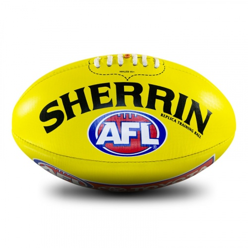
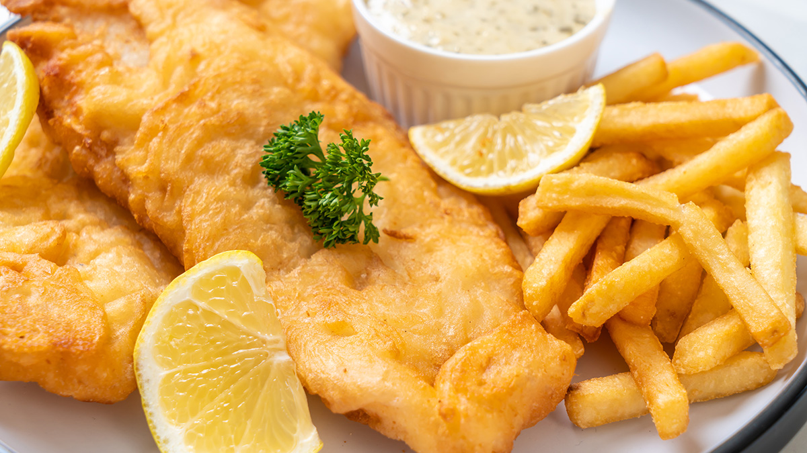

Upbringing
I was born October 2nd 1996 and lived in the northern suburb of Melbourne, Kingsbury. I have one older brother who is three years older than me. When I was four, my parents decided to run a milk bar, and we lived in the back of the milk bar. The milk bar was in Cranbourne North, and this is where I attended the local primary school. I was a very shy and quiet kid and this has translated into my adult life. As my parents were often very busy with the business, I would keep to myself listened to music, watch tv and this is also where I found a love for football. As I was the younger child, being analytical and aware of my surroundings was very important, I would always be conscious of what got my older brother into trouble and form my analysis on what happened. At the start of 3rd grade, we moved to Balwyn North, and I completed Primary school and High School at the local schools. I am very grateful that I made a handful of friends during this time, that I still keep in touch with. I am aware of the rarity of true friendships, so I hold these friendships very close to me as I go through adulthood.
Early adulthood
Coming out of highschool, I decided to study Commerce, I was not 100% sure of what I wanted to do yet, but I had always been fascinated with businesses and investments so I thought this would be a good starting point. Once I graduated, I wanted to try take a different route to most my peers at the time. Instead of finding a job, I wanted to try my luck with a small business. To take the risk while I was young, and did not have a family or mortgage to think about. I am very proud of myself for taking the path that I did, with the challenges that I went through, I believe it helped me grow into the person I am today and shaped who I will be going into the future. I ran a fish and chip shop that sold fresh seafood as well. Here, I learnt knife skills in how to fillet and portion fish. I learnt how to manage employees and roster them. I learned how to speak and interact with suppliers on a daily basis in a professional manner. I learnt how to solve problems as they arose on my own, and how to judge when I needed to call for external help and to judge the limits of my own capabilities.
Future
In the future, I would like be able to provide value to a company as a web developer. In order to achieve this goal, I will remain disciplined in learning about web developing on a daily basis. Hopefully in the near future, I will be able to settle into a job and potentially start a family with my partner.